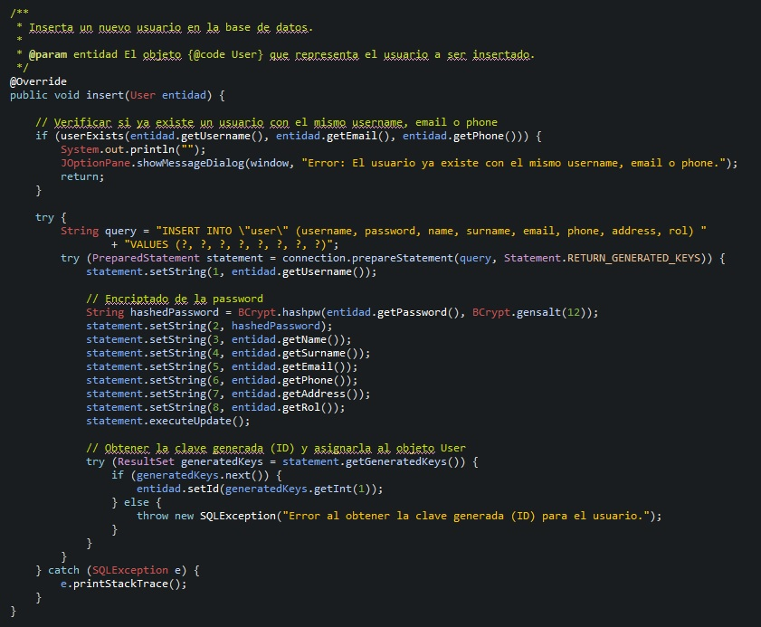
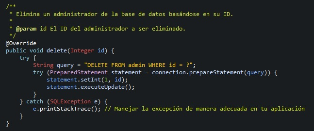
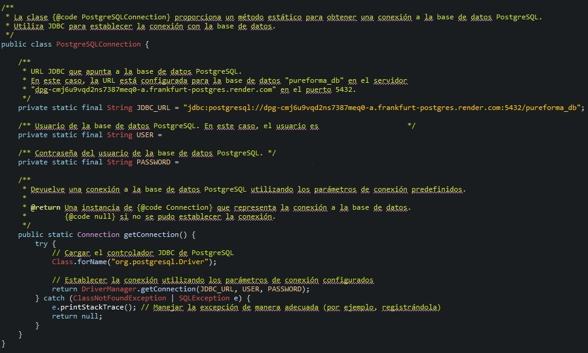

Controlador Login
La clase Controller_LoginWindow actúa como el puente entre la interfaz gráfica y la
lógica de la aplicación, facilitando la gestión del proceso de inicio de sesión. A continuación, se
describen sus principales funciones y características.
- Referencia a la ventana de inicio de sesión: El controlador mantiene una referencia
a la ventana de inicio de sesión (
LoginWindow_PureForma).
- Acceso a la base de datos de usuarios: Utiliza un objeto de la clase
UserDAO para acceder a la base de datos de usuarios.
- Constructor: El constructor recibe la ventana de inicio de sesión como parámetro y
establece la referencia correspondiente.
- Método actionPerformed: Este método se ejecuta en respuesta a eventos de interfaz
de usuario. Realiza acciones específicas dependiendo del botón clicado.
- Acciones para el botón de inicio de sesión:
- Verifica las credenciales utilizando el objeto
UserDAO.
- Si las credenciales son correctas, crea una instancia de
MainWindow_PureForma,
la hace visible y cierra la ventana de inicio de sesión.
- Si las credenciales son incorrectas, muestra una ventana de diálogo de contraseña incorrecta
y registra un mensaje en la consola.
- Acciones para el botón de regreso:
- Crea una instancia de
StartWindow_PureForma, la hace visible y cierra la
ventana de inicio de sesión.

Registro de Usuarios
Registro de Usuarios hace énfasis a la clase RegisterWindow_PureForma.java, será la clase con la interfaz del registro de usuario, si este no está registrado pues irá a esta clase donde tendrá que rellenar unos campos obligatoriamente.
Veremos las siguientes secciones:
- Declaraciones e inicializaciones.
- Creación panel de inicio de sesión.
- Creación del Panel Centrado.
- Creación de Componentes Dentro del Panel Centrado.
- Métodos Adicionales para la Interfaz Gráfica
- Métodos Getter y Setter
Declaraciones e Inicializaciones
Se inicia la declaración e inicialización de la clase RegisterWindow_PureForma que extiende de JFrame.
Se declaran atributos para los componentes de la interfaz gráfica, como campos de texto, botones y el controlador.
Se define el constructor de la clase que realiza la inicialización de la interfaz gráfica y el controlador.
- Extiende de JFrame.
- Declaración de atributos para componentes de la interfaz gráfica.
- Definición del constructor que inicializa la interfaz y el controlador.
Creación del Panel Principal de Inicio de Sesión
Se define un método createLoginPanel encargado de crear el panel principal de inicio de sesión.
Se crea un nuevo panel (panel_Login) y se le establecen propiedades como opacidad y color.
Se llama al método createCenteredPanel para crear un panel centrado dentro del panel principal.
Se agrega una imagen de fondo al JFrame.
Se llama al método handleFocusLost para manejar eventos de enfoque en los campos de texto.
- Definición del método createLoginPanel.
- Creación del panel principal (panel_Login) con propiedades específicas.
- Llamada al método createCenteredPanel para un panel centrado.
- Agregado de imagen de fondo al JFrame.
- Llamada al método handleFocusLost para manejar eventos de enfoque.
Creación del Panel Centrado
Se define un método createCenteredPanel encargado de crear un panel centrado dentro de un panel principal.
Se crea un nuevo panel (panel_Border) y se le establecen propiedades como opacidad y color.
Se llama al método createComponents para crear componentes dentro del panel centrado.
- Definición del método createCenteredPanel.
- Creación del panel centrado (panel_Border) con propiedades específicas.
- Llamada al método createComponents para la creación de componentes dentro del panel centrado.
Creación de Componentes Dentro del Panel Centrado
Se define un método createComponents encargado de crear varios componentes dentro del panel centrado.
Se crea una etiqueta para el logo.
Se crean campos de texto para el nombre de usuario y la contraseña, y se agregan iconos correspondientes.
Se crea un escucha de enfoque para el campo de contraseña.
Se crean campos de texto adicionales para email, teléfono, nombre, apellido y dirección, y se agregan iconos correspondientes.
Se crean botones para registrar y retroceder, con sus respectivos manejadores de eventos.
- Definición del método createComponents.
- Creación de etiqueta para el logo.
- Creación de campos de texto para usuario y contraseña con iconos correspondientes.
- Creación de escucha de enfoque para el campo de contraseña.
- Creación de campos de texto adicionales para email, teléfono, nombre, apellido y dirección con iconos.
- Creación de botones para registrar y retroceder con manejadores de eventos.
Métodos para la Creación y Manejo de Campos de Texto
Estos métodos se encargan de la creación y manejo de los campos de texto en la interfaz gráfica.
createTextField
Este método crea un campo de texto redondeado con texto inicial, ubicación y dimensiones específicas.
Al obtener el enfoque, si el texto es igual al texto inicial, se limpia el campo. Si se pierde el enfoque y el campo está vacío, se restaura el texto inicial.
createPasswordField
Este método crea un campo de contraseña redondeado con ubicación y dimensiones específicas.
handleFocusGained y handleFocusLost
Estos métodos manejan eventos de enfoque para el campo de contraseña.
handleFocusGained oculta el texto y muestra el carácter de contraseña cuando se obtiene el enfoque.
handleFocusLost restaura el texto inicial si el campo de contraseña está vacío al perder el enfoque.
Métodos Getter y Setter
Estos métodos permiten el acceso y la modificación de los componentes de la interfaz gráfica desde otras clases, además lo puedo utilizar en funciones o métodos conn facilidad.
Controlador User Register
Controlador User Register es el controlador de la clase que hemos visto anteriormente donde se registran los usuarios, se llama Controller_RegisterWindow.java y es donde se encuentra toda la lógica y los insert a la base de datos del registro del usuario.
Veremos:
- Atributos del Controlador.
- Constructor del Controlador.
- Métodos de validación.
- Jdialog.
Controlador de la Ventana de Registro
Este bloque de código pertenece al controlador (Controller_RegisterWindow) asociado a la ventana de registro (RegisterWindow_PureForma).
Atributos del Controlador
window: Referencia a la instancia de la ventana de registro.userDAO: Instancia de la clase UserDAO para realizar operaciones de acceso a datos.user: Instancia de la clase User que representa al usuario en proceso de registro.rol: Cadena que indica el rol por defecto ("user").
Constructor del Controlador
El constructor del controlador toma una instancia de la ventana de registro como parámetro y realiza la inicialización de los atributos.
Método actionPerformed
Este método es llamado cuando se produce una acción, principalmente cuando se hace clic en botones.
Realiza operaciones específicas según el botón clicado. En este caso, se verifica si el botón es el de registro (btnRegister).
- Si es el botón de registro, se validan los campos de entrada y se procede al registro del usuario en la base de datos.
- Si es el botón de retroceso (
btnBack), se vuelve a la ventana de inicio.
Validación de Campos y Registro
Se valida que los campos de entrada no estén vacíos. En caso de éxito, se extraen los datos de los campos de texto y se realiza el registro del usuario.
Validación de Email y Número de Teléfono
Se realiza la validación del formato del correo electrónico y del número de teléfono mediante métodos específicos.
En caso de fallo, se muestra un mensaje de error y se limpia el campo correspondiente.
Mostrar Información del Usuario Registrado en la Consola
Se imprime en la consola la información del usuario registrado mediante System.out.println.
Crear Ventana de Inicio si se Clicó el Botón de Retroceso
Si el botón clicado es el de retroceso (btnBack), se crea una nueva instancia de la ventana de inicio y se muestra.
Métodos de Validación en el Controlador
Método validateNumber
Este método se encarga de validar campos que solo deben contener números. Se verifica si el contenido del campo es numérico utilizando una expresión regular.
textField: Campo de texto a validar.fieldName: Nombre del campo para mensajes de error.setter: Consumer que acepta un valor y realiza una acción.
Método isNumeric
Este método auxiliar verifica si una cadena es numérica utilizando una expresión regular. Retorna true si la cadena contiene solo dígitos.
Método validateEmail
Este método se encarga de validar campos de email. Utiliza una expresión regular para verificar el formato del email.
textField: Campo de texto a validar.fieldName: Nombre del campo para mensajes de error.setter: Consumer que acepta un valor y realiza una acción.
Método isValidEmail
Este método auxiliar verifica si una cadena tiene un formato de email válido mediante una expresión regular.
Método validateFields
Este método verifica que todos los campos necesarios no estén vacíos o iguales al hint. Se utiliza para validar antes de realizar el registro del usuario.
Método isEmpty
Este método verifica si un campo de texto está vacío o igual al hint. Se utiliza para cada campo individualmente.
textField: Campo de texto a validar.fieldName: Nombre del campo para mensajes de error.hint: Texto de pista para comparación.
Método isEmptyPassword
Este método verifica si un campo de contraseña está vacío o igual al hint. Se utiliza específicamente para el campo de contraseña.
passwordField: Campo de contraseña a validar.fieldName: Nombre del campo para mensajes de error.hint: Texto de pista para comparación.

Interfaz GenericDAO
La interfaz GenericDAO define una serie de métodos estándar para realizar operaciones
básicas de acceso a datos en una base de datos. Esta interfaz puede ser utilizada como un contrato
genérico para operaciones CRUD en cualquier tipo de entidad (T).
Métodos:
-
void insert(T entidad);
Este método se utiliza para insertar una nueva entidad en la base de datos. Debes
proporcionar un objeto de tipo T que representa la entidad que deseas
almacenar.
-
T getById(Integer id);
Recupera una entidad de la base de datos basándose en el ID proporcionado. El método devuelve
un objeto de tipo T correspondiente al ID especificado.
-
List getAll();
Retorna una lista de todas las entidades presentes en la base de datos. Este método es útil
cuando necesitas obtener todas las filas de una tabla en la base de datos.
-
void update(T entidad);
Actualiza una entidad existente en la base de datos. Debes proporcionar un objeto de tipo
T con los nuevos valores que deseas actualizar en la base de datos.
-
void delete(Integer id);
Elimina una entidad de la base de datos basándose en el ID proporcionado. Este método elimina
la fila correspondiente a la entidad con el ID especificado.

Clase UserDAO
La clase UserDAO implementa la interfaz GenericDAO y proporciona métodos
específicos para interactuar con la base de datos en el contexto de gestión de usuarios.
Métodos:
-
void insert(User entidad);
Este método se utiliza para insertar un nuevo usuario en la base de datos. Verifica
previamente si ya existe un usuario con el mismo username, email o phone antes de realizar
la inserción.

-
User getById(Integer id);
Recupera un usuario de la base de datos basándose en el ID proporcionado.
-
List getAll();
Retorna una lista de todos los usuarios presentes en la base de datos.
-
void update(User entidad);
Actualiza un usuario existente en la base de datos.
-
void delete(Integer id);
Elimina un usuario de la base de datos basándose en el ID proporcionado.
Otros Métodos:
-
boolean checkCredentials(String username, String password);
Verifica las credenciales de un usuario comparando el username y la contraseña proporcionados
con los almacenados en la base de datos.
-
boolean userExists(String username, String email, String phone);
Verifica la existencia de un usuario con el mismo username, email o phone en la base de
datos.
Implementación:
La clase utiliza JDBC para interactuar con la base de datos PostgreSQL y la biblioteca
jBCrypt para el cifrado y verificación de contraseñas.

Clase AdminDAO
La clase AdminDAO implementa la interfaz GenericDAO y proporciona
métodos específicos para interactuar con la base de datos en el contexto de gestión de
administradores.
Métodos:
-
void insert(Admin entidad);
Este método se utiliza para insertar un nuevo administrador en la base de datos.
-
Admin getById(Integer id);
Recupera un administrador de la base de datos basándose en el ID proporcionado.
-
List getAll();
Retorna una lista de todos los administradores presentes en la base de datos.
-
void update(Admin entidad);
Actualiza un administrador existente en la base de datos.
-
void delete(Integer id);
Elimina un administrador de la base de datos basándose en el ID proporcionado.

Otros Métodos:
Implementación:
La clase utiliza JDBC para interactuar con la base de datos PostgreSQL y la biblioteca
jBCrypt para el cifrado y verificación de contraseñas.
Clase PostgreSQLConnection
La clase PostgreSQLConnection proporciona un método estático para obtener una conexión
a la base de datos PostgreSQL. Utiliza JDBC para establecer la conexión con la base de datos.
Métodos:
-
Connection getConnection();
Este método estático devuelve una conexión a la base de datos PostgreSQL utilizando los
parámetros de conexión predefinidos.
Parámetros de Conexión:
Los siguientes parámetros se utilizan para establecer la conexión a la base de datos PostgreSQL:
-
JDBC_URL:
URL JDBC que apunta a la base de datos PostgreSQL. En este caso, la URL está configurada para la base de datos pureforma_db en el servidor dpg-cmj6u9vqd2ns7387meq0-a.frankfurt-postgres.render.com en el puerto 5432.
-
USER:
Usuario de la base de datos PostgreSQL.
-
PASSWORD:
Contraseña del usuario de la base de datos PostgreSQL.
